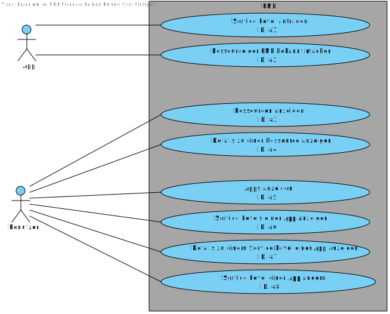

04. August 2011
Einleitung
Zweck
Dieses Dokument stellt die Spezifikation des Projektes "Privacy Management Platform" dar. Es summiert
die Ergebnisse der Analyse und repräsentiert die Grundlage für die spätere Entwicklung in einer Iteration.
Es ist daher eine vertragliche Grundlage für Kunde und Entwickler, um die zu entstehende
Software und ihre Funktionalität so ausführlich und vollständig wie möglich zu beschreiben,
damit die weitere Entwicklung stets auf dieses Dokument zurückgreifen kann.
Die Spezifikation definiert dabei einen grafischen Prototypen für die spätere Benutzeroberfläche,
beschreibt die gewünschten Funktionsabläufe und definiert im Begriffslexikon die
Bedeutung von speziellen Begriffen, die in der Arbeitsumgebung verwendet werden. Da
auch Begriffe neu definiert werden, um die Software möglichst knapp und für alle eindeutig
zu beschreiben, empfiehlt es sich zunächst, einen Blick in das Begriffslexikon zu werfen
und die Beschreibung vermeintlich klarer Begriffe dort nachzulesen.
Projektüberblick & Motivation
Die rasche Entwicklung in der Kommunikationsindustrie mit ihren unzähligen Möglichkeiten übersteigt die heutige Konfigurationssoftware. Nicht jeder kennt alle Anwendungen auf seinem Smartphone, ganz davon abgesehen welche Rechte die einzelnen Programme besitzen, ob diese auf den Internetanschluss zugreifen oder sogar Ihre E-Mails weiterleiten.
Im Rahmen des Studienprojekts "Privacy Management Platform" kurz "PMP" an der Universität Stuttgart soll eine Software entwickelt werden, die dem Konsumenten das sichere Benutzen eines Smartphones erlauben könnte.
Der Benutzer soll alle Apps und Ressourcen auf dem Smartphone schnell und einfach verwalten können. Mittels einer ansprechenden grafischen Bedienungsoberfläche wird es möglich sein jeder einzelnen Anwendung, die mit PMP kompatibel ist, bestimmte Rechte zuzuweisen bzw. diese zu entziehen.
Leserkreis
Diese Spezifikation dient als ein zentrales Dokument für die folgenden Lesergruppen:
- den Entwicklern von PMP
- dem Kunden
- dem Betreuern des Studienprojekts
Konventionen
In diesem Dokument werden mehrere Konventionen verwendet, um knapp, übersichtlich,
lesbar und treffend zu sein:
- Für Überbegriffe wie Benutzer oder Entwickler wird das generische Maskulinum verwendet.
Da die Deutsche Sprache hier keine zufriedenstellende Alternative kennt, sind
damit selbstverständlich auch alle weiblichen Leserinnen angesprochen.
- In diesem Dokument wird die deutsche Sprache verwendet; dabei ist allerdings zu
beachten, dass sich übernommene oder übersetzte Begriffe aus dem Englischen nicht
vermeiden lassen. Diese werden dann jedoch grammatikalisch an die Deutsche Sprache
angepasst.
- Ein Verweis in diesem Dokument auf andere Kapitel wird so dargestellt:
-
Die Versionsnummern sind nach dem Schema aufgebaut, dass zuerst die Iterationsnummer genannt wird und anschließend die Versionsnummer der Spezifikation in dieser Iteration. "3.2" bezeichnet z.B. die 2. Version der Spezifikation für die 3. Iteration.
Benutzeroberfläche
Funktionale Anforderungen
Use-Cases
Diagramm

Anwendungsfälle
Im folgenden werden die im Use-Case Diagramm aufgeführten Anwendungsfälle ausformuliert.
Service-Level von Programm auswählen
| Use-Case ID |
#1 |
| Name |
Service-Level einer App einstellen |
| Ziel |
Der Benutzer will das Service Level einer App einstellen. |
| Vorbedingungen |
- Der normale Modus ist aktiviert
- Die App fragt nach Rechten
|
| Nachbedingungen |
Das Service Level der App wurde eingstellt. |
| Nachbedingungen im Sonderfall |
Es wurden keine Änderungen am Service Level der App vorgenommen. |
| Akteure |
Benutzer |
| Normalablauf |
- Der Benutzer wählt in der erscheindenen Eingabemaske das richtige Service Level aus.
- Dem Benutzer werden Details (benötigte Ressourcen) zum ausgewählten Service Level angezeigt.
- Der Benuzer akzeptiert diese Anforderungen und weist der App das Service Level dadurch zu.
|
| Sonderfall 1a |
- Der Benutzer bricht den Vorgang ab.
|
| Sonderfall 2a |
- Der Benutzer will die geforderten Rechte nicht akzeptieren, zurück zu Schritt 1.
|
Ressourcen anzeigen
| Use-Case ID |
#2 |
| Name |
Ressourcen anzeigen |
| Ziel |
Der Benutzer möchte die verfügbaren Ressourcen anzeigen und Details zu diesen erfahren. |
| Vorbedingungen |
- Der Benutzer hat die PMP-App frisch gestartet und ist noch in keinem Untermenü.
|
| Nachbedingungen |
Der Benutzer hat Details zu den verfübaren Ressourcen erfahren. |
| Nachbedingungen im Sonderfall |
- |
| Akteure |
Benutzer |
| Normalablauf |
- Der Benutzer wählt die Ressourcenübersicht aus.
- Dem Benutzer werden alle verfügbaren Ressourcen aufgelistet.
- Der Benutzer wählt eine Ressource aus.
- Dem Benutzer werden Details über die Ressource angezeigt.
- Der Benutzer schliest die Detailübersicht
- Der Benutzer schliest die Ressourcenübersicht.
|
| Sonderfall 6a |
- Der Benutzer möchte zu einer weiteren Ressource Details anzeigen, zurück zu Schritt 2.
|
Anforderungen an PMP
Oberfläche
Standardeinstellungen
Nicht-Funktionale Anforderungen
Bedienbarkeit
Nutzungskontext
Personae
Nutzungsszenarien
Quantitative Anforderungen
Leistungsanforderungen
Mengengerüst
Eingabelängen
Robustheit
Verfügbarkeit
Sicherheit
Portabilität & Kompatibilität
Internationalisierung
Die Oberfläche von PMP wird zunächst auf Englisch entwickelt werden, soll aber für beliebig viele Sprachen erweiterbar sein. Das Handbuch wird auf Deutsch entstehen, wobei die Screenshots die englische Oberfläche zeigen werden.
Protokollierung
Installation
Erweiterbarkeit
Wartbarkeit
Abgeschlossenheit
Gesetzliche Einschränkungen
Es gibt keine generellen gesetzlichen Richtlinien oder Normen, die eingehalten werden müssen.
Die Universität Stuttgart muss ein zeitlich und personell unbegrenztes Nutzungsrecht an
der Software erhalten.
Die Lizenzierung der Software an sich ist nicht vorgeschrieben, allerdings muss eine Open-Source-Lizenz verwendet werden.
Optionale Anforderungen
Auflistung der optionalen Anforderungen
Begriffslexikon
App
| Begriff | App |
|---|
| Synonyme | - |
|---|
| Bedeutung | Eine App ist eine lauffähige Software, die auf einem Mobilgerät ausgeführt wird. Eine App definiert verschiedene Service Level, die jeweils mehrere Services enthalten können. Eine App kann über eine Schnittstelle Ressourcengruppen über PMP benutzen. Eine App kann eigene Ressourcengruppen und Rollen in die PMP einfügen. |
|---|
| Beispiele | PMP selbst ist eine App. Die Demo-Szenarien, die entwickelt werden, sind Apps. |
|---|
| Abgrenzung | Nicht unter den Begriff App fällt zur PMP inkompatible, nicht-ausführbare oder nicht-mobile Software. |
|---|
| Gültigkeit | Eine App erlangt Bedeutung für die PMP, sobald über sie Ressourcengruppen oder Kontexte importiert werden oder sie in PMP für Ressourcenzugriffe eingebunden wird. Die App wird wieder irrelevant, sobald der Import aufgehoben wird oder die App deinstalliert wird. |
|---|
| Bezeichnung | Eine App wird durch ihren Namen identifiziert und durch ihre Funktionalität beschrieben. |
|---|
| Unklarheiten | keine |
|---|
| Querverweise | , , , |
|---|
Expertenmodus
| Begriff | Expertenmodus |
|---|
| Synonyme | Erweiterter Modus |
|---|
| Bedeutung | Der Expertenmodus ist eine Darstellungsart der Optionen für den Benutzer der PMP. Dabei wird ihm maximale Freiheit der einzelnen Einstellungen bezüglich jeden Privacy Levels gelassen. Des Weiteren kann er diese Einstellungen kontext-sensitiv machen. |
|---|
| Beispiele | - |
|---|
| Abgrenzung | Der Expertenmodus ist nicht der "normale", simple Modus. |
|---|
| Gültigkeit | - |
|---|
| Bezeichnung | Der Expertenmodus ist einzigartig in der PMP. |
|---|
| Unklarheiten | keine |
|---|
| Querverweise | , |
|---|
Kontext
| Begriff | Kontext |
|---|
| Synonyme | - |
|---|
| Bedeutung | Ein Kontext ist ein Zustand einer in PMP eingebundenen, speziell gekennzeichneten Ressource. Von einem Kontext können einzelne Einstellungen der Rollen und Privacy Level abhängen. |
|---|
| Beispiele | Die Ressourcengruppe "GPS-Ortung" könnte einen Kontext "Aktuelle Geschwindigkeit beträgt weniger als 100 km/h" anbieten. |
|---|
| Abgrenzung | Ein Kontext ergibt sich nicht durch den Zustand der PMP. |
|---|
| Gültigkeit | Der Kontext bleibt gültig, solange die entsprechende Ressourcengruppe in PMP eingebunden ist. |
|---|
| Bezeichnung | Der Kontext wird durch die zugehörige Ressourcengruppe und seinen Namen eindeutig identifiziert. |
|---|
| Unklarheiten | keine |
|---|
| Querverweise | , , , |
|---|
Privacy Level
| Begriff | Privacy Level |
|---|
| Synonyme | Flag |
|---|
| Bedeutung | Ein Privacy Level ist eine Ressourcen-Einstellung in PMP, die durch die Ressourcengruppe definiert wird. Ein Privacy Level kann kontext-abhängig sein. Ihre konkrete Konfiguration für eine App wird beim Zugriff auf eine Ressource der Ressourcengruppe mitübergeben. Damit kann die Ressource über die Privatssphäre der zur Verfügung gestellten Inhalte entscheiden. |
|---|
| Beispiele | Die App "Schachspiel" könnte Privacy Flags wie "Lesen" oder "Schreiben" anbieten. |
|---|
| Abgrenzung | Ein Privacy Level ist weder ein Service Level noch eine Rolle. |
|---|
| Gültigkeit | Der Privacy Level bleibt gültig, solange die entsprechende Ressourcengruppe in PMP eingebunden ist. |
|---|
| Bezeichnung | Der Privacy Level wird durch die zugehörige Ressourcengruppe und seinen Namen eindeutig identifiziert. |
|---|
| Unklarheiten | keine |
|---|
| Querverweise | , , , , , |
|---|
Ressource
| Begriff | Ressource |
|---|
| Synonyme | - |
|---|
| Bedeutung | Eine Ressource ist eine konkrete Daten-Schnittstelle, deren Privatsphäre reguliert werden soll. |
|---|
| Beispiele | Die Ressourcengruppe "E-Mail-Zugriff" könnte die Ressourcen "Absender", "Empfänger", "Betreff", "Inhalt" und "Anhang" enthalten. |
|---|
| Abgrenzung | Eine Ressource ist keine Ressourcengruppe. Eine Ressource ist nach Definition auch keine allgemeine, eingebundene Datei. |
|---|
| Gültigkeit | Die Ressource bleibt gültig, solange die entsprechende Ressourcengruppe in PMP eingebunden ist. |
|---|
| Bezeichnung | Die Ressource wird durch die zugehörige Ressourcengruppe und seinen Namen eindeutig identifiziert. |
|---|
| Unklarheiten | keine |
|---|
| Querverweise | |
|---|
Ressourcengruppe
| Begriff | Ressourcengruppe |
|---|
| Synonyme | Kategorie |
|---|
| Bedeutung | Eine Ressourcengruppe ist eine sinnverwandte Zusammenfassung einzelner Ressourcen. |
|---|
| Beispiele | Es könnte eine Ressourcengruppe zum Zugriff auf das Dateisystem, auf GPS-Empfang oder auf einen Web-Service geben. |
|---|
| Abgrenzung | Eine Ressourcengruppe ist weder eine Ressource noch eine Gruppe von Ressourcengruppen. |
|---|
| Gültigkeit | Die Ressourcengruppe bleibt gültig, solange die entsprechende App in PMP eingebunden ist. |
|---|
| Bezeichnung | Die Ressourcengruppe wird durch die zugehörige App und ihren Namen eindeutig identifizert. |
|---|
| Unklarheiten | keine |
|---|
| Querverweise | , |
|---|
Rolle
| Begriff | Rolle |
|---|
| Synonyme | Preset |
|---|
| Bedeutung | Eine Rolle ist eine Zusammenfassung der konkreten Konfiguration einer Menge von Privacy Levels. Eine Rolle kann kontext-abhängig sein. Eine Rolle kann einer App zugewiesen werden. |
|---|
| Beispiele | Eine Rolle könnte eine Zusammenfassung aller Lese-Rechte auf alle Datenbanken sein. |
|---|
| Abgrenzung | Eine Rolle ist keine Zusammenfassung einer Menge von Privacy Levels. Eine Rolle ist keine feststehende Bezeichnung für eine App. |
|---|
| Gültigkeit | Die Rolle bleibt gültig, solange die entsprechende App in PMP eingebunden ist. Eine Rolle kann nur entstehen, wenn die enthaltenden Privacy Level bereits bekannt sind. |
|---|
| Bezeichnung | Die Rolle wird durch die zugehörige App und ihren Namen eindeutig identifizert. |
|---|
| Unklarheiten | keine |
|---|
| Querverweise | , , |
|---|
Service
| Begriff | Service |
|---|
| Synonyme | Dienst |
|---|
| Bedeutung | Ein Service ist ein konkreter Funktionalitätsteil einer App, der Zugriff auf Ressourcen benötigen kann. |
|---|
| Beispiele | Ein Service in der App "Prüfungsamt" könnte "Prüfungsnote abfragen" sein. |
|---|
| Abgrenzung | Ein Service ist keine App. |
|---|
| Gültigkeit | Der Service bleibt gültig, solange der entsprechende Service Level in PMP aktiviert ist. |
|---|
| Bezeichnung | Der Service wird durch den zugehörigen Service Level, die zugehörige App und ihren Namen eindeutig identifizert. |
|---|
| Unklarheiten | keine |
|---|
| Querverweise | , , |
|---|
Service Level
| Begriff | Service Level |
|---|
| Synonyme | - |
|---|
| Bedeutung | Ein Service Level ist eine Menge von Services, die bereitgestellt werden unter der Voraussetzung, dass eine Menge von Privacy Levels erfüllt wird. |
|---|
| Beispiele | Die App "Navigation" könnte die Service Level "grobe Ortung", "genaue Ortung" und "fortlaufende Ortung" anbieten. Dabei werden jeweils höhere Einstellungen der Privacy-Level der Ortungs-Ressource verlangt, aber dafür auch mehr Services angeboten. |
|---|
| Abgrenzung | Ein Service Level ist weder ein Privacy Level noch eine Rolle. |
|---|
| Gültigkeit | Der Service Level bleibt gültig, solange die entsprechende App in PMP eingebunden ist. |
|---|
| Bezeichnung | Der Service Level wird durch die zugehörige App und ihren Namen eindeutig identifizert. |
|---|
| Unklarheiten | keine |
|---|
| Querverweise | , , , |
|---|
Versionshistorie
- 04.08.2011: Version 1.1: Ausformulierungen einfacher Kapitel nach erstem Spezifikationsmeeting
- 24.07.2011: Version 0.1: Erstes Gerüst der Spezifikationsvorlage